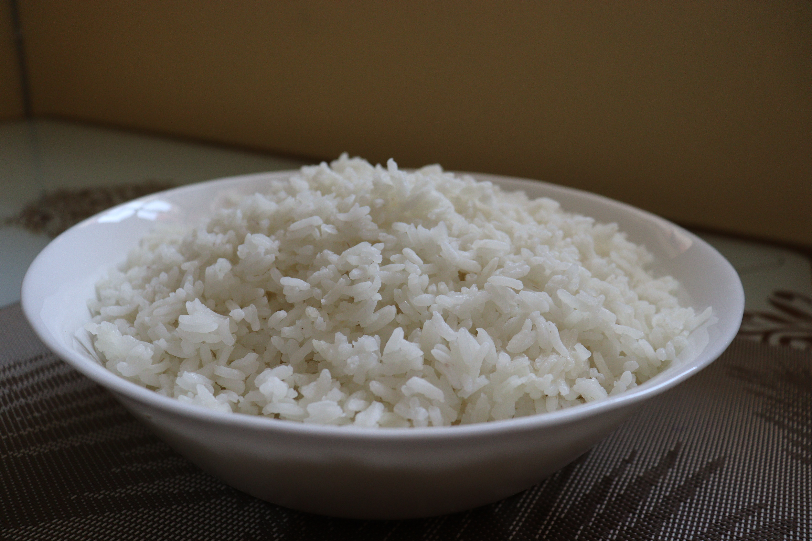

stove top long grain rice

Description
Quick recipe for long grain Rice
Ingredients
- sauce pan with a lid
- 1 cup of rice
- 1.5 to 2 cups of water
- salt and pepper to taste
- butter
Steps
- rinse rice in cold water unless specified otherwise on packaging
- add 1.5 ro 2 cups of water to medium sauce pan
- add rub light coat of butter or oil to the top inside of pan to prevent over boil
- (optional) season water to taste
- bring water to boil
- add rice to boiling water, reduce heat to medium low and stir rice
- cover sauce leaving a small opening for steam to escape
- let cook for 15 to 18 minutes
- taste test rice, it should be tender
- if not tender add a little water check rice after a few minutes
- after the rice is done cooking stir to help it dry
- let stand for with lid on for 10 minutes
Back to homepage